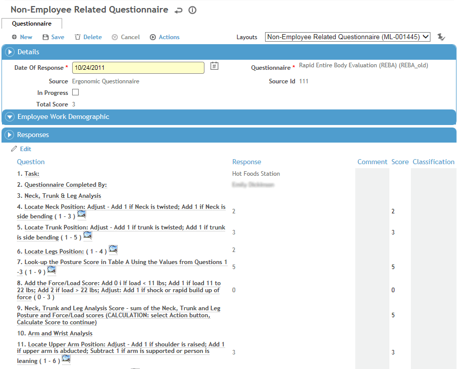
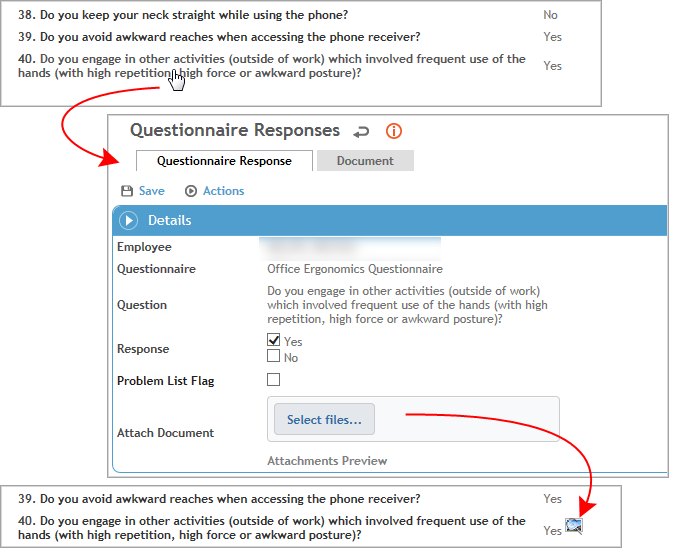

Retrieve the questionnaire from the same location where you created it -- i.e. the Questionnaires tab in a module record, or by clicking Questionnaire in the appropriate Cloud’s menu.
In the Responses section, required questions are indicated with an asterisk. A question may have been defined with a default response (in the SingleQuestion look-up table), or it may be auto-populated with the previous response to the question, but it can be changed.
You can either enter the employee’s response to each question within the Responses section, or click a question to open it in a separate window.
A question may allow a document to be attached (or may require it); to attach a document, open the question and drag a document into the Select files box.
If a question is defined as a formula, the text of the question will prompt you to click Actions and choose Calculate Score.

Click Save.
If any question response is assigned a classification (in the SingleQuestion look-up table), Cority takes the highest value classification for the individual questions and then assigns that to the overall questionnaire (in the System Classification field on the Questionnaire tab). For example, if a question response has a 2A classification, and another question response has a 1B classification, then the system classification for the overall questionnaire will be 2A. To override the system classification, enter a value in the Medical Classification field on the Questionnaires tab.
If a question response is assigned a score (in the SingleQuestion look-up table), the Total Score is displayed on the Questionnaires tab. If Display Questionnaire Scores is selected in the Questionnaire look-up table, the individual score is shown on the Responses tab.
After the questionnaire responses have been saved, each question becomes a link.
Click the question.
Click Select files and retrieve the file you want to attach.
Click Save.
If a document is attached to a questionnaire that is linked to a module entity, the document will be listed in the module’s Documents tab. The Document Type will be the type defined in the “Default Document Type (Main Form Attaching)” system setting. The Document Date will be the date the record was submitted.
Attachments added to questions on an Environmental, Ergonomics, Quality, or Safety Inspection questionnaire, can be accessed by the Assignees from the Documents sub list of any corresponding auto-created 'Action' records, and any solutions that support auto-creation of Findings & Actions from a questionnaire (Incident, Audits, Management of Change, etc.).
When you return to the questionnaire, an icon is displayed beside the question to indicate an attachment. When you hover over the icon you will see a thumbnail of the attachment.
